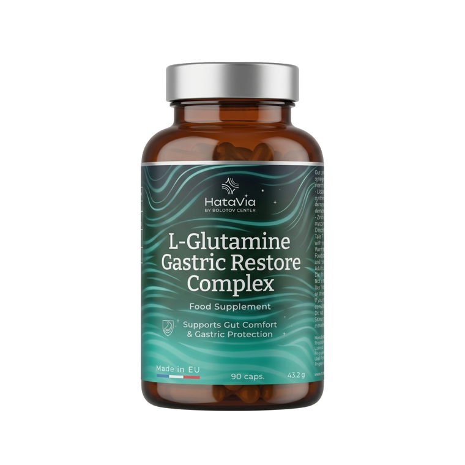
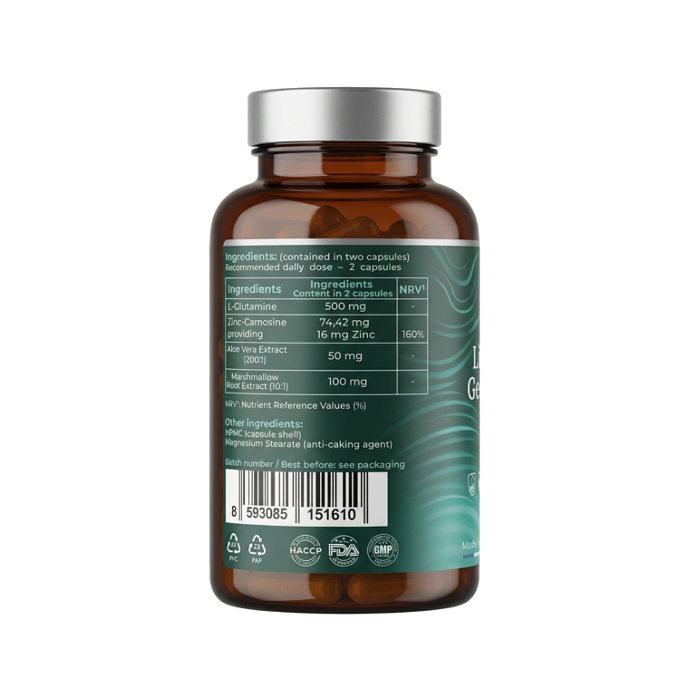

14-dniowy plan dla osób, które chcą systematycznie zadbać o codzienny komfort trawienny.
Nawracające uczucie zgagi po posiłku bywa związane nie tylko z kwasowością, ale również z zachwianą równowagą trawienia. Ten 14-dniowy plan to uporządkowane podejście z jasnymi wskazówkami stosowania — nie jednorazowe rozwiązanie, lecz stopniowe wspieranie komfortu. Wiele osób zauważa pierwsze zmiany w samopoczuciu już po kilku dniach.
| 1 × Balzam Bolotova | 500 ml |
| 1 × L-Glutamine Gastric Restore Complex | 90 kapsułek |
| 1 × Drukowany przewodnik — plan 14 dni | — |
Opakowanie wystarcza na okres do 30 dni, w zależności od wybranego schematu.
Program zawiera konkretne wskazówki, dawkowanie oraz zalecenia dotyczące diety. Jest przeznaczony dla osób, które szukają uporządkowanego podejścia do codziennego komfortu trawiennego i wrażliwego trawienia. Zestaw łączy produkty z jasno opisanym sposobem stosowania.
Program może być odpowiedni, jeśli zależy Ci na codziennym komforcie po posiłkach — na przykład gdy zdarza Ci się uczucie zgagi, uczucie ciężkości lub dyskomfort po obfitych posiłkach. To wsparcie codziennej równowagi trawienia w ramach zrównoważonego stylu życia, a nie leczenie. Przy utrzymujących się lub poważnych dolegliwościach zalecana jest konsultacja z lekarzem.
Suplement diety na bazie witaminy C, opracowany na podstawie receptury akademika Borisa Bołotowa. Starannie dobrane składniki jakości spożywczej: fermentowany ocet winogronowy, skoncentrowany sok z czerwonych odmian winogron oraz witamina C.
Suplement diety w kapsułkach. Bez GMO, bez glutenu, bez sztucznych barwników i konserwantów. Kapsułki wegańskie.
* Dozwolone oświadczenia zdrowotne dotyczące witaminy C i cynku (Rozporządzenie (UE) nr 432/2012).
Balzam Bolotova: 1 łyżeczka 2 razy dziennie podczas posiłku lub bezpośrednio po nim. Nie spożywaj balzamu w postaci nierozcieńczonej — rozcieńcz w 100–150 ml wody i pij przez słomkę.
L-Glutamine Gastric Restore Complex: 2 kapsułki dziennie, popijając szklanką wody.
Dla najlepszego efektu stosuj produkty łącznie, zgodnie z dołączonym planem 14 dni, jako element codziennego wspierania komfortu trawiennego.
Indywidualna nietolerancja składników, ciąża, okres karmienia piersią, wiek poniżej 18 lat, ostre stany zapalne przewodu pokarmowego, podwyższona kwasowość żołądka. W przypadku chorób przewlekłych lub przyjmowania leków skonsultuj się z lekarzem.
Nie należy przekraczać zalecanej dziennej porcji. Suplementy diety nie mogą być stosowane jako substytut zróżnicowanej diety. Przechowywać w miejscu niedostępnym dla małych dzieci. Suplementy diety, nie są lekami.